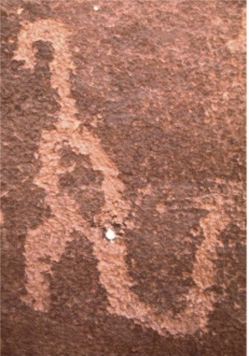
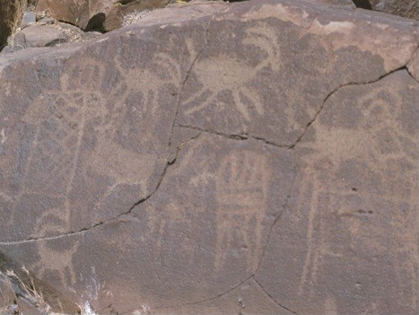
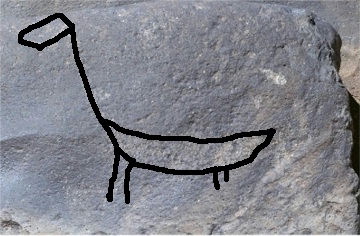
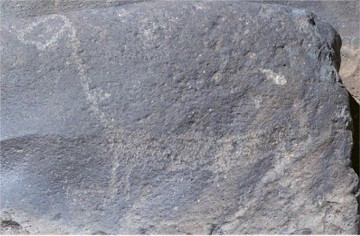
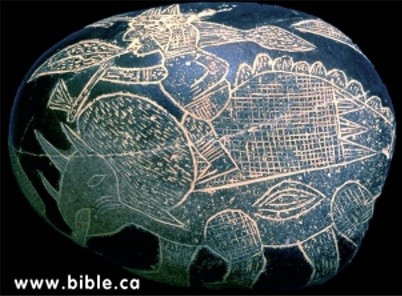

)
)| Feature Article - June 2004 |
| by Do-While Jones |
Pick up just about any book on dinosaurs, and it will say that dinosaurs lived from 230 million to 65 million years ago. That's always stated as a fact, but how do they know?
The ages of dinosaur fossils are determined by the layer of rock in which they are found. How do they know how old the rock layer is?
It is usually the case that when layers of rock are piled up upon each other, the bottom one is the oldest, and the top one is the youngest, because the bottom one had to be there before the other ones formed on top of it. The exceptional case is the one in which liquid rock squeezes up through some layers. In that case, the liquid rock hardens into a solid rock formation that is younger than the layers above and below it. It is also possible that an earthquake might slide some bottom layers up over some top layers. But these unusual cases don't happen very often, and it is generally possible to detect when it does happen.
So, one can make a cross-sectional cut through a rock formation, examine the layers, and be reasonably confident that the lower layers formed before the upper layers. The questions are, "How long did it take for each layer to form?" and, "How much time elapsed between layers?" Traditionally, geologists have used the "geologic column" to answer these questions.
There isn't any place where you can actually see the entire geologic column, except in a textbook. The closest you can come is the Grand Canyon. The Tapeats Sandstone, near the bottom of the Canyon, is supposed to be early Cambrian (formerly said to be 570 million years old, but declared to be 542 million years old last month by the new IUGS Geologic Timescale). The Kaibab Limestone, at the rim of the Canyon, is supposed to be late Permian (formerly 245 million years old, but now said to be 251 million years old). It is about 5,000 feet from the top of the Kaibab Limestone to the bottom of the Tapeats Sandstone. If the new published ages are correct, it means that 5,000 feet of sediment accumulated in 291 million years 1. That means it takes 58,200 years to create 1 foot of rock, on the average.
Since there is no place on Earth where you can see the complete geologic column, how do scientists know it exists? They presume it exists, and construct it by matching layers in other places. Going north from the Grand Canyon you find the Moenkopi Formation on top of Kaibab Limestone at the bottom of Zion Canyon. The top rock layer in Zion is the Carmel Formation, which is under the Dakota Sandstone at the bottom of Bryce Canyon. Bryce Canyon has layers of rock on top of the Dakota Sandstone, with the Brian Head Formation at the top, which is presumably recent. All the layers between the Kaibab Limestone and the top of the Brian Head Formation total about 6,000 feet. If the top of the Kaibab Limestone is 251 million years old, then it took only 41,833 years to create 1 foot of rock (on the average) since then.
The grand total is about 11,000 feet of sediment laid down over 542 million years, for an average of 49,272 years per foot of rock. Or, looking at it the other way, 1 million years for every 20 feet of rock.
Of course, geologists don't measure time that way because it would be stupid. If you find a dinosaur bone that is four inches in diameter laying horizontally in a rock layer, the bottom of the bone would be 16,424 years older than the top of the bone. Certainly the entire layer of rock containing that bone was formed all at once. No bone can lay around exposed for 16,424 years, waiting to be buried.
Although the rapid formation of rock layers is an obvious fact, it makes evolutionists uncomfortable because it isn't compatible with a neat uniformitarian explanation. If rock layers form rapidly in short periods of time, separated by longer time intervals of undetermined length, that makes it impossible to tell how long ago the rock layers were formed.
Mount St. Helens erupted on May 18, 1980, and several times after that in the succeeding months. Geologists can point to certain rock layers and tell the exact date when that whole rock layer formed, and approximately how many hours it took to form. Individual rock layers represent hours of time. The junction between rock layers represent weeks or months between eruptions. There is no way to tell how long it was between Mount St. Helens eruptions from the rock layers alone. Geologists need the historical observations to tell them when each layer formed.
Let's be very clear about this. Geologists have a fighting chance of estimating the duration of each eruption because there is something to analyze. They can measure (roughly) the total amount of ash (or lava) produced by an eruption. They can estimate the amount of ash (or lava) produced per minute during a typical eruption, and can come up with a reasonable estimate of how long the eruption lasted. The accuracy of their estimate depends upon how well they measured the amount of volcanic material produced, and their estimate of the rate at which the volcano produced it. The estimate may be good or bad, but at least they have something to base the estimate upon.
There is nothing in the rock that tells them the amount of time between eruptions. That is, no rock was produced between the eruptions, so there is nothing to analyze. They can't determine the amount of time that nothing was produced based on the amount of nothing that was produced divided by the average rate that nothing was produced.
The fundamental problem is that the time between eruptions of Mount St. Helens was longer than the duration of each eruption. Therefore, the bulk of the time is represented by the nothing that is between the rock layers, not the something that is in the rock layers.
Geologists are coming to the consensus that fossil-bearing rock layers were produced rapidly, and that there were unknown periods of time between the rock layers. Therefore, most of "geologic time" is represented by the rocks that aren't there. (If geologists were astronomers, they would call the rocks that aren't there, "dark matter." )
Geologists have given traditional dates to sedimentary rock layers. They do that based upon the kind of fossils found in the rocks, and the evolutionary assumptions of the stages through which life evolved, and how long it took to evolve through each stage.
Geologists are quick to say, "The present is the key to the past." If that is true, then the key doesn't fit the lock they are trying to open.
I lived in Cincinnati, Ohio, from 1950 through 1960. (Apparently, the Cincinnati Reds were just waiting for me to leave town to win the pennant.) Back in those days, I can remember hearing reports on the radio that the Ohio River flooded parts of Cincinnati practically every spring.
Since 1971 I have lived in the Mojave Desert, where it doesn't flood as often as it does in Cincinnati--but even here we have floods. One of my coworkers was killed when a flash flood washed her car off that section of California Highway 14 and Highway 178 about 12 miles west of Ridgecrest. The "Michaelson Lab Muckers" know how much mud filled some of the government buildings in China Lake, and some homes in Ridgecrest, in a single day just a few years later in the August 15, 1984 flood.
The flood that killed my friend probably also buried some lizards, snakes, and maybe some rabbits and coyotes. That same year the Ohio River probably flooded near Cincinnati and probably buried some critters, too, but I am betting none of them were lizards or coyotes. If you make the assumption, as evolutionists do, that the kinds of critters buried in a sedimentary rock layer determine when that rock layer was formed, then you would assume that the Mojave Desert flood and Ohio River flood happened at different times because the Mojave Desert flood contained lizards and coyotes not found in the Ohio River flood.
The fossils in a sedimentary rock layer tell you what kind of critters were living in that area at the time they were buried by a flood, landslide, or sandstorm. The dating and correlation of the geologic column is based on the assumption that all the wildlife living all over the world is the same at any given time. Therefore, floods, landslides, and sandstorms that occur in North America, South America, Africa, Europe, and Asia, will all bury the same kind of critter in any given year. That's just foolish.
Dinosaurs were said to have lived 250 million to 65 million years ago because their bones are found in rocks that are said to be Triassic, Jurassic, or Cretaceous. Rocks are classified as Triassic, Jurassic, or Cretaceous because they contain fossils that evolutionists presume were alive all over the Earth only during those periods of time.
If you found a rock with a dinosaur bone in it, you would not be able to convince an evolutionary geologist that it was anything other than a Triassic, Jurassic, or Cretaceous rock. If radioisotope dating indicated the rock was less than 65 million years old, or more than 250 million year old, the evolutionist would flatly reject the radioisotope date. It is a fundamental article of faith that dinosaurs lived 250 to 65 million years ago.
Since dinosaurs supposedly died out 65 million years ago, it is not possible that anyone in historic times has ever seen a living dinosaur. But what if people have seen living dinosaurs? Wouldn't that completely refute the assumptions upon which the dating of the geologic column rests? For that reason, it is worth evaluating the evidence that man and dinosaurs might have lived together.
If dinosaurs and man lived together, don't you think they would be mentioned in ancient books? Certainly they would. They would not be called "dinosaurs" because that word wasn't coined until 1841. If they were mentioned, you would expect them to be called something else, but would expect their descriptions to match dinosaurs. You would expect to read things like this in an ancient biology book (On Animals), written by Aelilan (170 to 230 AD):
|
"Historians of Chios assert that near Mount Pelinnaeus in a wooded glen there was a dragon of gigantic size who made the Chians shudder. No farmer or shepherd dared approach the monster's lair. ... During a violent lightning storm a forest fire destroyed the entire region of the wooded slopes. ... After the fire, all the Chians came to see and discovered the bones of gigantic size and a terrifying skull." 2 |
Many people saw this "dragon" alive and were afraid of it. After it died in a forest fire, many people saw its bones. Respected historians and biologists of the time believed the stories to be accurate. If the "dragon" wasn't a dinosaur, what was it?
Philostratus (200 - 230 AD) wrote in the Life of Apollonius of Tyana,
|
Northern "India is girt with dragons of enormous size; not only are the marshes full of them but the mountains as well and not a single ridge is without one. ... The dragons of the foothills have crests, of moderate height when young but they grow with them and extend to a great height when they reach full size." The bodies of the plains dragons are sometimes found with elephants, a great reward for hunters. Their tusks resemble those of swine, but more twisted and sharp. "They say that in the skulls of the mountain dragons are stored stones of flowery colors that flash out all kinds of hues." They tell us that "a great many dragons' skulls are enshrined" in the center of the great city of Paraka (Peshawar?) close by the mountain. 3 |
It has long been speculated that some dinosaurs lived in shallow water because it would help support their weight. If they did, people seeing them might call them "marsh dragons." Some dinosaurs had crests, like the "dragons of the foothills" were said to have had. Horned dinosaurs had "tusks" more curved than boars (swine). If dinosaurs had feathers (as some evolutionists believe), they might have been iridescent feathers, or they might have had iridescent scales that "flash out all kinds of hues." There weren't just eye-witness accounts. There were carcasses that confirmed the eye-witness accounts.
In our (May, 2002) feature article, Dinotopia, we went into great detail about the historic description of griffins and the similarity to the horned dinosaur skeletons actually found in the region where griffins were supposed to have lived. In that essay we also mentioned historic reports of neades, which match the description of "prehistoric" elephants, whose bones were found in that area.
In our earlier (October, 1998) feature article, Unicorns, etc., we discussed historic reports of flying reptiles in Asia, Europe, and Africa, that have remarkable similarity to a ramphorhynchoid pterosaur called Scaphognathus crassirostris. That article also discussed the similarity between Native American reports of thunderbirds and pterodactyls. So, we don't need to repeat that information again.
Of course, the oldest description of creatures that were apparently dinosaurs are the descriptions of behemoth and leviathan found in Job chapters 40 and 41. Even if one does not accept the Bible as divinely inspired, everyone accepts the fact that it is an ancient document translated into English in 1611, which was 230 years before dinosaur bones were discovered. The King James translators didn't translate the words "behemoth" and "leviathan" because they did not know of any living animal that matched the description of those creatures. The creatures described sound like dinosaurs. Not only that, the text refers to these dinosaurs with the expectation that every reader should be very familiar with them and know what they are.
Not only are there written descriptions of creatures that seem to be dinosaurs, there are also pictures. In our two previous essays we discussed the ancient pictures of griffins, which look like horned dinosaurs, the classic Chinese drawings of dragons that look like ramphorhynchoid pterosaurs, and the controversial pictures of a decaying creature (possibly a dead plesiosaur) caught by a Japanese fishing boat. These aren't the only images of dinosaurs.
There is a famous dinosaur petroglyph found by the 1924 Doheny Expedition in the Havai Supai Canyon (Grand Canyon) in 1924.
 |
The picture at the left happened to come from the Internet 4, but it is so famous, you can buy miniature replicas of this petroglyph on refrigerator magnets in gift shops in northern Arizona. Unfortunately, I have not seen the actual petroglyph, so I don't know if it is genuine or not. One might reasonably question its authenticity because (1) it was found after dinosaurs were known from fossil reconstructions and (2) it was found by people who were paid to find artifacts for a museum. Human nature being what it is, we have to be skeptical about this petroglyph. Just about any place you find real petroglyphs you will find bogus ones along side of them. There are some rocks a few miles south of Inyokern, California, that have petroglyphs on them. They are easy to get to, and I have taken several Saturday afternoon hikes to see them. On some of those hikes I've seen little kids trying to make their own petroglyphs on other rocks. The Puerco Ruin Trail in the Petrified Forrest National Park (in Arizona) goes past a few rocks with petroglyphs on them. Although theoretically protected, they are easily accessible to the general public, and there is abundant evidence that some recent carving has been going on. Even the genuine petroglyphs probably have been retraced to make them clearer and easier to see. |
There is only one place I know of where there is an abundance of genuine, unadulterated petroglyphs. That place is Renegade Canyon (a.k.a. Little Petroglyph Canyon) in the Coso mountain range north of China Lake, California. 5 This area was closed to the public when the Naval Ordinance Test Station (NOTS) was established in 1943. Before that time, only a few prospectors visited the area. There never have been any paved roads near the canyon. They are not now, and never have been, easily accessible to the general public.
On rare occasions (two or three times a year), the Navy allows the Maturango Museum to conduct public tours of the canyon. The groups are small, and there are always at least two specially-trained guides with the group. Nobody is permitted to go down the canyon ahead of the first guide, and nobody is permitted to linger behind the last guide. This not only prevents people from getting lost, it also prevents vandalism. It is a long trip on dirt roads through an area where live bombs have been dropped, but it is well worth the trip.
 |
About 10 years ago, the Navy decided to try to create a virtual copy of the canyon. I shot about 30 rolls of 36-exposure Navy film (that's about 1,000 pictures) of rocks with petroglyphs on them. Three other guys used a laser range-finder to survey the canyon. Then, somebody was supposed to create a 3D model of the canyon from the digital survey data and drape the photographs I took over them. Of course, there was way too much data to process, so the project failed. I suppose the pictures I took are lost in a Navy file cabinet somewhere. But, it did give me a week to study petroglyphs in detail. Shortly after that, I went with one of the museum trips and took 194 pictures on my own film. I also made a music video featuring video of the pertroglyphs I took on Museum tour. Many of the petroglyphs depict sheep. The picture at the left is a typical picture from my collection. |
|
The picture at the right (from my collection) isn't typical. In fact, it is the only one I know of like it. The petroglyph is somewhat faded. The rear legs and tail are not as distinct as the head, but there appears to be a substantial tail behind the rear legs. The original outline appears to have been like this.  |
 This thing certainly isn't a sheep. It could be a giraffe, but giraffes have small horns, much longer legs, and a skinnier tail. It looks more like a sauropod dinosaur than anything else. |
Southern California isn't prime dinosaur country, but southwestern Utah was. There are many dinosaur tracks in southwestern Utah (in and around Zion National Park). It is certainly possible that a Native American trader could have seen dinosaurs in southwestern Utah and tried to describe them to the natives of the Coso range using this drawing as a visual aid.
I am sure the Doheny Expedition petroglyph is a dinosaur, but I'm not sure it is genuine. I am sure the Coso petroglyph I photographed is genuine, but I am not sure it is a dinosaur. (But it looks more like a dinosaur than anything else.) There are, however, pictures engraved on rock that are unquestionably dinosaurs, and probably genuine.
 |
Stones like these 6 were first found in Peru by conquistadors in the 16th century. At that time people didn't recognize them as dinosaurs because dinosaurs weren't reconstructed from fossils until the 19th century. They were considered to be strange, perhaps imaginary, creatures. Admittedly, the 16th century Spanish conquistadors were generally Catholic; but they certainly weren't trying to disprove Darwin's 19th century theory of evolution. Furthermore, plundering gold was a much more profitable enterprise than bringing back museum pieces, so they really had no financial motive for creating fake artifacts. |
Thousands of stones like these have been found since then, and many of them have recognizable dinosaurs on them. One can imagine a poor Peruvian peasant making dozens of fake ones to sell, but it is implausible that a peasant (or even a village full of peasants) made thousands of them.
We haven't seen any of these stones, so all we know is what we read about them in books or on the Internet. 7 We can't attest to their validity. But, if the conquistadors had no religious or financial motive for making them, and if poor Peruvian peasants didn't have the skill and time to manufacture them in large quantities, why not believe that they are genuine?
The only reason for not believing that they are genuine is prejudice. If the stones only had pictures of jaguars on them, there would be no question about them. But if one truly believes that dinosaurs died out millions of years ago, then one has to believe all ancient drawings of dinosaurs are fake and all historical reports of dinosaurs are bogus.
You can't know for sure one way or another. It really all comes down to faith. That is, it is a question of who to believe. The ancient historians certainly believed that people had seen, and in some cases, killed dinosaurs. You can have faith in the ancient historian and artists, but maybe they were mistaken.
Many people will tell you that dinosaurs died out millions of years ago. They will tell you that all the historical reports and ancient drawings are simply fiction. But how do they know? You can have faith in all the people who have repeated the myth that dinosaurs died out millions of years ago, but what if they are mistaken?
The only reason to believe dinosaurs died out millions of years ago is speculation about the ages of rock formations containing their remains, based on unsubstantiated supposition about animals evolving into other kinds of animals over long periods of time.
The assumption that the theory of evolution is true is not an assumption that is strong enough to support the weight of dinosaurs living millions of years ago. The theory of evolution is based on the premise that chemicals somehow came together through a natural process that has never been duplicated in the laboratory to create the first living thing. Attempts to discover and duplicate that unknown process have simply shown why it is unscientific to think that it ever happened.
The theory of evolution also rests upon the premise that after that first living thing came into existence, it reproduced itself. Sometimes it reproduced itself incorrectly, giving itself (among other things) a cardiovascular system by a series of fortunate accidents. Given what we know now, this is scientifically untenable.
Since we never see new organs and body plans arising spontaneously, evolutionists are forced into the position that these changes happen very rarely. Since there are so many differences between a dandelion and a lion, they are forced to postulate long periods of time for these rare events to happen. That's where the myth that dinosaurs lived (and died) millions of years ago came from.
It isn't logically valid to say that the supposed dates when dinosaurs lived are evidence of evolution because the supposed dates are derived from the assumption that the theory of evolution is true, and the rate at which it occurs. That is a logical fallacy called "circular logic."
The myth of evolution, when examined in the light of science, is seen to be flawed. The myth that dinosaurs lived millions of years ago, when examined in the light of history, is equally weak. It simply seems strong because it has been repeated over and over in National Parks and public schools. Any evidence that dinosaurs lived at the same time as man is dismissed immediately because "everybody knows dinosaurs lived millions of years ago." Everybody doesn't know that! It is more accurate to say that "very many people believe dinosaurs lived millions of years ago." It is time to examine that belief and see if it is actually true.
Upon reading a published report that someone at Montana State Northern University found evidence of dried blood on dinosaur bones (which certainly could not have survived millions of years), I actually went to Montana to check out that report myself. Not only did I confirm it, but I went on a MSUN dinosaur dig, and found evidence that the bones in that area seem to have been buried after the formation of the coulees in that area (which are believed by geologists to have been formed thousands, not millions, of years ago). We published the details of my trip in the We Dug Dinos article in the September, 1999, newsletter.
Last summer, when I investigated the undisputed dinosaur tracks in the Paluxy River (near Glen Rose, Texas) I found that the tracks followed the (geologically young) course of the river. Is it reasonable to believe that the Paluxy River cut through 20 feet of recent rock and just happened to follow the tracks of dinosaurs made millions of years earlier? or do those tracks follow the river because the river was there first?
When you look at where dinosaur bones are found, where the tracks are found, the condition of some dinosaur bones, the similarity between dinosaurs and historic descriptions of "griffins" and "dragons," and ancient art showing creatures that look like dinosaurs, the only logical explanation is that dinosaurs lived in historic times. The only reason to reject the logical explanation is the silly, unscientific myth of dinosaurs as an evolutionary stepping stone between cold-blooded lizards and warm-blooded birds.
| Quick links to | |
|---|---|
| Science Against Evolution Home Page |
Back issues of Disclosure (our newsletter) |
| Web Site of the Month |
Topical Index |
Footnotes:
1
According to the 1994 timescale, it took 325 million years. So, the Grand Canyon now exposes 34 million less years of rock layer than previously believed. But tourists will still probably go there.
2
Mayor, The First Fossil Hunters, 2000, Princeton University Press, page 260 (Ev)
(Ev)
3
ibid. page 269-70
4
http://www.bible.ca/tracks/native-american-dino-art.htm
(Cr+)
5
http://www.desertusa.com/magdec97/cosos%20/dec_cosos.html
6
http://www.bible.ca/tracks/peru-tomb-art.htm
(Cr+)
7
Butt and Lyons, Dinosaurs Unleashed, 2004 Apologetics Press, page 52
(Cr+)
7
http://www.crystalinks.com/icastones.html
(Cr+)